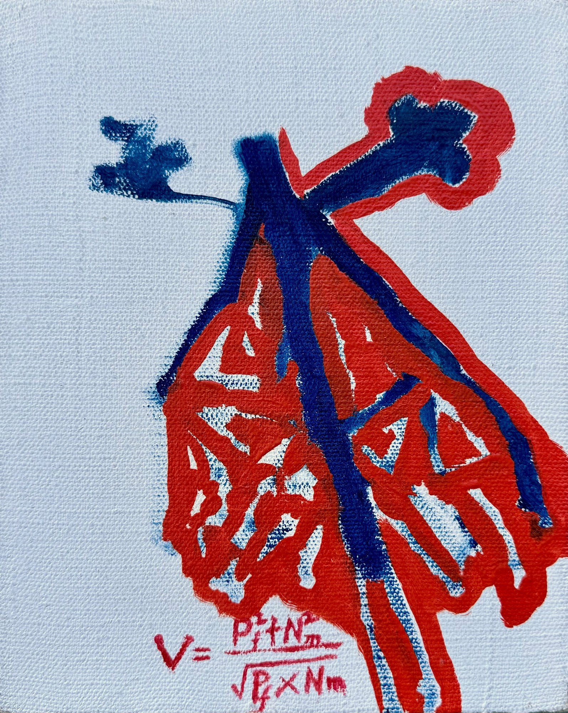

Metaphor and Neural Extension
Neural Mapping

Red lattice and a branching blue stroke on a light ground, with a studio formula at the lower left. The booklet shows this canvas on the same page as Venetian form under Metaphor and Neural Extension.
Booklet notes treat the mark as a studio measure of how discrete and blended paint states sit together, and how the stroke path can be read as a mapping metaphor. Operational marks are meant to be worked with the picture; metaphorical marks stay analogy. Longer theoretical writing lives on a separate site.
English title Neural Mapping is taken from the booklet’s mapping language for this companion canvas.